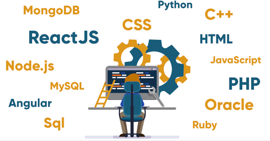

Hola everyone ! This is Rahman currently undergraduate from JNT University. I took computer science as a career after joining B.Tech. My interest include web development and riding super bikes.
Some of my favorite bikes are Harley Davidson fat boy, Ninja 1350, BMW Tiger 1250 etc. I also have crush on some of the Audi and Benz cars :D.
And one of my favourite hobby is cooking. I love cooking so much. Sometimes I think I would have better career as a chef but again I come to reality that cooking only two or three dishes won’t make me a great chef. I make delicious Hyderabadi dumb biryani and yes it is eatable 😂.
And coming to hobbies that are really helpful are Web development. I started as a hobby but it is an addiction to me now. Although I just do front end but, I am on the way to master backend also. Web development is a good timeless and I recommend everyone to have fun.

Basically I love technology. They make our life so easy. Because of technology we are living a comfortable life. Machines does all of our day to day task. For example it takes hours to sort million students ranks in order but it takes just a moment for a computer. I thank all the scientist and developers who contributed for discovery of tech things.
As you see above are the books I read during this lockdown period and learnt a lot by reading this. I recommend everyone just to go through these books once in a while to change the perseption of thinking.
Above books are free to read by visiting pdfdrive website. Go their and search for your desired book. Almost all types of books are available their.